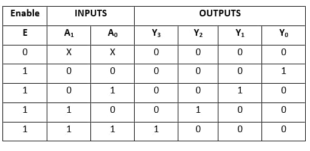
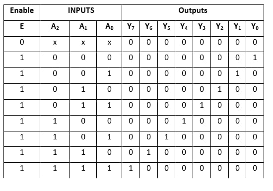
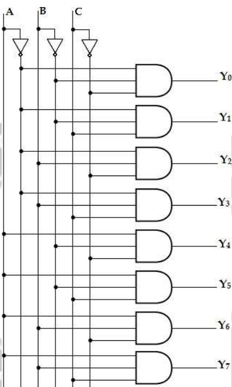

Decoder
2x4 line Decoder:
A binary decoder has ‗n‘ bit binary input and a one activated output out of 2n outputs. A binary decoder is used when it is necessary to activate exactly one of 2n outputs based on an n-bit input value.
Here the 2 inputs are decoded into 4 outputs, each output representing one of the minterms of the two input variables.
As shown in the truth table, if enable input is 1 (EN= 1) only one of the outputs (Y0 – Y3), is active for a given input.
Truth Table:
The output Y0 is active, ie., Y0= 1 when inputs A= B= 0
Y1 is active when inputs, A= 0 and B= 1
Y2 is active, when input A= 1 and B= 0
Y3 is active, when inputs A= B= 1
Logic Diagram:

3x8 line Decoder:
A 3-to-8 line decoder has three inputs (A, B, C) and eight outputs (Y0- Y7). Based on the 3 inputs one of the eight outputs is selected. The three inputs are decoded into eight outputs, each output representing one of the minterms of the 3-input variables. This decoder is used for binary-to-octal conversion. The input variables may represent a binary number and the outputs will represent the eight digits in the octal number system. The output variables are mutually exclusive because only one output can be equal to 1 at any one time. The output line whose value is equal to 1 represents the minterm equivalent of the binary number presently available in the input lines.
Truth Table:
Logic Diagram:
